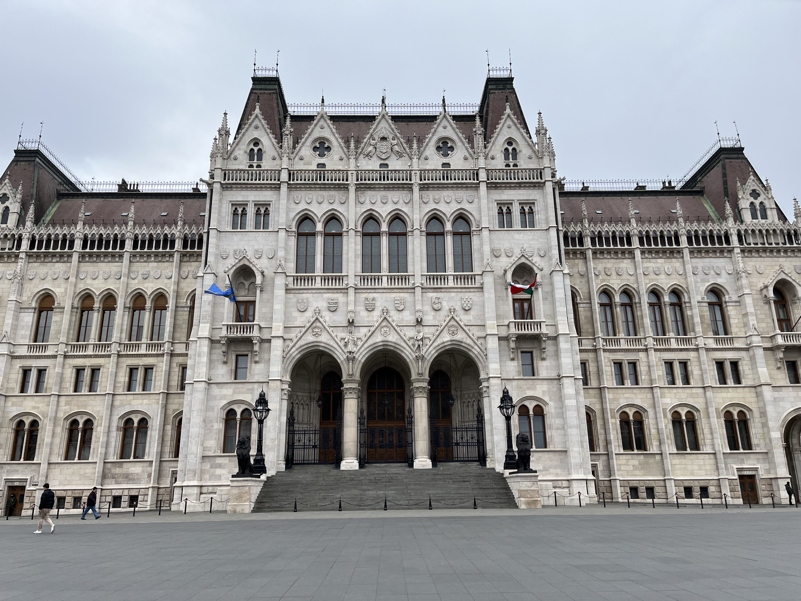

History
Museum of the City of Lodz
The Museum of the City of Lodz, located in the heart of the city, is a cultural treasure trove that tells the story of this region. Founded in 1965, the museum houses a vast collection of artifacts, photographs and exhibits that allow visitors to delve into Lodz's past and better understand its development as one of Poland's major industrial centers. In this article, I'd like to introduce you to the Lodz Museum in its entirety and from an outsider's point of view.

Cinema
THE FILM INDUSTRY IN LODZ
For years, Lodz was known as a great textile industry but also, and this is what we will deal with today, cinema.

Art
Street art in Lodz
Lodz, Poland, has become a popular destination for street art enthusiasts in recent years. The city has launched projects to promote street art and attract international artists to paint on its walls. The Lodz Street Art Festival is an annual event that attracts artists from all over the world to paint murals throughout the city.

Visit
The Textile Industry
Today I decided to talk about the textile industry in Poland and more particularly in Lodz. Indeed, the textile industry has had a major place in the history of Lodz and this is what we will see through this article.

Trip
Trip in Budapest
I'm going to tell you through this article about my trip that I made in Budapest from April 6th to April 11th. To put you in the context, I went to Budapest with 3 friends of mine (Malcom, Enric and Arthur) and I planned my trip with the help of Malcom. I preferred not to organize anything and let Malcom make me discover his city.